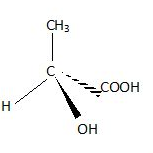

Exercice 1 : La chiralité au quotidien
La chiralité est la propriété d'un objet de ne pas être superposable à son image dans un miroir.
Consigne : Parmi les objets suivants, indique s'ils sont chiraux ou achiraux (on dit d'un objet qu'il est achiral s'il n'est pas chiral).
- Une main humaine.
- Une vis standard.
- Un ballon de football (sans logo).
- Une chaussure droite.
- Une fourchette de table classique.
Exercice 2 : Diversité des géométries du carbone
En chimie organique, le carbone peut adopter différentes géométries selon ses liaisons.
Consigne : Pour chaque molécule ci-dessous, identifie les carbone asymétrique et indique les par une *.
- Molécule A : CH3-CH2-OH (Éthanol)
- Molécule B : CH3-CHCl-Br (1-chloro-1-bromoéthane)
- Molécule C : H2C=CH2 (Éthène)
- Molécule D : HC ≡ CH (Éthyne)
- Molécule E : Cl-CH2-Cl (Dichlorométhane)
Exercice 3 : Configuration absolue et représentation de Cram
L'identification d'une molécule passe par ses descripteurs stéréochimiques R ou S.
Soit une molécule possédant un carbone asymétrique central lié à quatre groupes (Acide Lactique). Voici l'ordre de priorité (établi selon les règles de Cahn-Ingold-Prelog que nous étudierons
plus tard) :
- 1. Groupe -OH (priorité 1)
- 2. Groupe -COOH (priorité 2)
-
3. Groupe -CH3 (priorité 3)
- 4. Groupe -H (priorité 4, le plus petit)
1. Représentation : Voici une des configuration de cette molécule en perspective de Cram. Construire l'image dans un miroir de cette configuration

Molécule (a)
2. Manipulation mentale :
- Pour la molécule (a), indiquez où vous devez placer votre œil pour que le groupe 4 (le -H) soit caché par le carbone central.
- Dessinez ce que vous voyez (la disposition des trois groupes restants 1, 2 et 3) une fois votre œil placé à cet endroit.
3. Conclusion :
-
Déduisez-en si les groupes 1 → 2 → 3 tournent dans le sens des aiguilles d'une montre (indiquez alors que c'est la configuration R) ou dans le
sens contraire (configuration S).